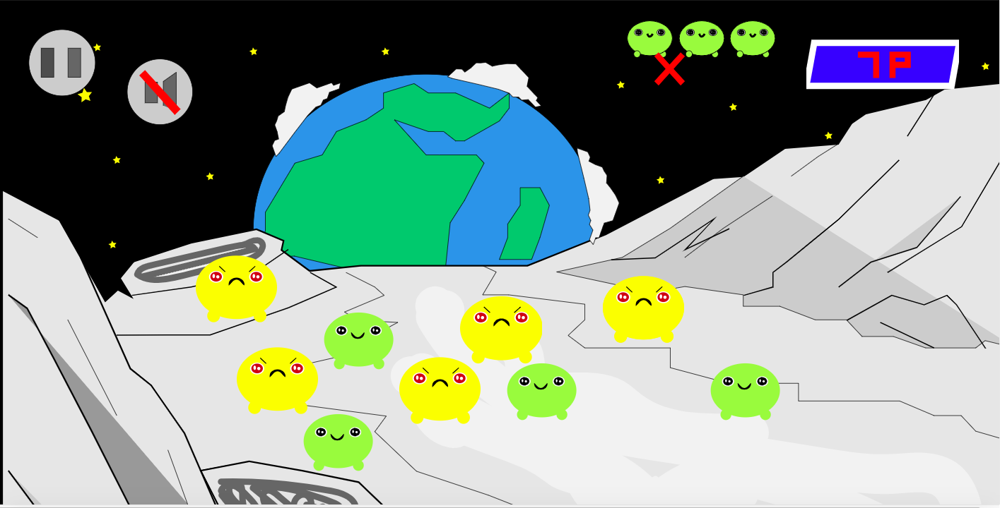

I dette animations temaet lagde vi ud med at designe vores scene til vores simple browser-spil. Det gjorde vi ved at illustrere i adobe illustrator, derefter eksportere elementerne som svg filer, og til slut så bruge CSS til at rykke elementerne. Scenen skulle som sagt bruges til vores browser-spil, og som man kan se var scenen ikke perfekt. efter dette forløb skulle vi arbejde videre med scenen, ved at begynde at animere elementerne. Dog føler jeg ikke at vi havde den tekniske kunden til at opfylde nogle af øvelsesopgaverne, der var under dette forløb. Derudover synes jeg det hele gik meget hurtigt iforhold til JS, med tanken om de fleste elever først lige var blevet halv-komfortable med CSS. Derudover kom jeg godt med da vi så skulle begynde at arbejde i grupper, da vi elever kunne lære fra os.